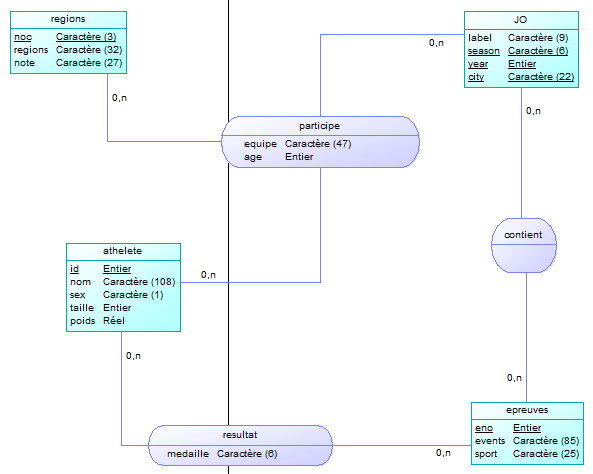
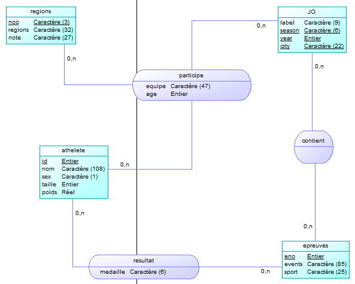

Exercice 4
MCD
Les fichiers mcd et mld sont dans le dossier en pièce jointe, comme le reste, mais voici une image du MCD extrait directement de Olympics.mcd :

MLD
De la même manière, voici un extrait d’Olympics.mld :  # Exercice 5
# Exercice 5
wc -l fileathlete_events.csv : 271 117 lignes. noc_regions : 230 lignes.
head -1 athlete_events.csv“ID”,“Name”,“Sex”,“Age”,“Height”,“Weight”,“Team”,“NOC”,“Games”,“Year”,“Season”,“City”,“Sport”,“Event”,“Medal”
Le séparateur de champs est la virgule.
Une ligne représente une participation d’un athlète à une compétition.
head -1 athlete_events.csv |tr " " _ |tr , " " |wc -wIl y a 15 colonnes.
La colonne Season.
cat athlete_events.csv |grep "Jean-Claude Killy" |wc -lIl y a 6 lignes qui font références à Jean-Claude Killy.
file -b -i athlete_events.csvCe fichier est encodé en us-ascii.
Voici la partie du script qui permet d’importer les données, elle est trouvable dans le script “importation.sql”, et représente les 28 premières lignes de ce script. Ce script est idempotent, il produit toujours le même résultat.
DROP TABLE IF EXISTS import CASCADE;
DROP TABLE IF EXISTS noc;
DROP TABLE IF EXISTS athlete CASCADE;
DROP TABLE IF EXISTS regions CASCADE;
DROP TABLE IF EXISTS olympics CASCADE;
DROP TABLE IF EXISTS epreuves CASCADE;
DROP TABLE IF EXISTS participe;
DROP TABLE IF EXISTS resultat;
DROP TABLE IF EXISTS contient;
CREATE temp TABLE import (
n1 INT, n2 TEXT, n3 TEXT, n4 INT, n5 INT, n6 FLOAT,
n7 TEXT, n8 TEXT, n9 TEXT, n10 INT, n11 TEXT, n12 TEXT,
n13 TEXT, n14 TEXT, n15 TEXT
);
\copy import from 'Ressource/athlete_events_utf8.csv' with (FORMAT csv, NULL 'NA', HEADER, ENCODING 'UTF-8')
DELETE FROM import WHERE n10 < 1920 OR n13 = 'Art Competitions';
-- SELECT COUNT(*) FROM import; -> 255.080
CREATE temp TABLE noc (
n1 TEXT, n2 TEXT, n3 TEXT
);Toutes les requêtes sont trouvable dans le fichier “requetes.sql” en pièce jointe
SELECT COUNT(*) AS nbcolumns FROM information_schema.columns WHERE table_name = ‘import’;
SELECT COUNT(*) AS nbrows FROM import;
SELECT COUNT(n1) FROM noc;
SELECT COUNT(DISTINCT n2) FROM import;
SELECT COUNT(n15) FROM import WHERE n15=‘Gold’; ## Retrouvez Carl Lewis; Combien de lignes se réfèrent à Carl Lewis ? (1 valeur) SELECT * FROM import WHERE n2 LIKE ‘Carl Lewis%’;
Les fichiers mcd et mld sont dans le dossier en pièce jointe, comme le reste, mais voici une image du MCD extrait directement de Olympics.mcd :

De la même manière, voici un extrait d’Olympics.mld : # Exercice 5
Comment envisagez-vous l’import de ces données ?
Colonne de la table import
athlete_events_utf8.csv n1 = INT n2 = TEXT -> CHAR(108) : SELECT MAX(LENGTH(n2)) FROM import; n3 = TEXT -> CHAR(1) : SELECT MAX(LENGTH(n3)) FROM import; n4 = INT n5 = INT n6 = FLOAT n7 = TEXT -> CHAR(47) : SELECT MAX(LENGTH(n7)) FROM import; n8 = TEXT -> CHAR(3) : SELECT MAX(LENGTH(n8)) FROM import; n9 = TEXT -> CHAR(11) : SELECT MAX(LENGTH(n9)) FROM import; n10 = INT n11 = TEXT -> CHAR(6) : SELECT MAX(LENGTH(n11)) FROM import; n12 = TEXT -> CHAR(22) : SELECT MAX(LENGTH(n12)) FROM import; n13 = TEXT -> CHAR(25) : SELECT MAX(LENGTH(n13)) FROM import; n14 = TEXT -> CHAR(85) : SELECT MAX(LENGTH(n14)) FROM import; n15 = TEXT -> CHAR(6) : SELECT MAX(LENGTH(n15)) FROM import;
noc_regions_utf8.csv n16 = TEXT -> CHAR(3) : SELECT MAX(LENGTH(n16)) FROM import; n17 = TEXT -> CHAR(32) : SELECT MAX(LENGTH(n17)) FROM import n18 = TEXT -> CHAR(27) : SELECT MAX(LENGTH(n18)) FROM import